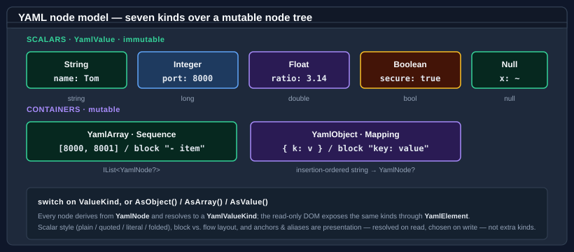

Core concepts
This page describes the moving parts of Bodu.Text.Yaml — the serializer, the converter model, the two DOMs, and the reader/writer seam. The library keeps the Bodu serializer family architecture — the same serializer facade, the shared attribute family, naming policies, serialization callbacks, converter factories, [ExtensionData], [Constructor], and [Required] that the TOML and Bencode siblings carry — and tunes only what YAML's value model warrants; those YAML-specific points are called out below.
Part of the Text & Serialization topic.
The serializer
The static YamlSerializer is the high-level entry point. Serialize writes an object graph to YAML; Deserialize<T> binds YAML back to a type. Its surface is string text, UTF-8 bytes, and the same stream facade its siblings ship:
Serialize<T>(T value, YamlSerializerOptions? options = null)→string, andSerialize(object? value, Type inputType, …)→stringfor a runtime-typed value;Serialize<T>(IBufferWriter<byte> destination, T value, …)writes UTF-8 bytes;SerializeAsync<T>(Stream destination, T value, …)writes them to a stream.Deserialize<T>(string yaml, …)→T?andDeserialize<T>(ReadOnlySpan<byte> utf8Yaml, …)→T?, plusDeserialize(ReadOnlySpan<byte> utf8Yaml, Type returnType, …)→object?;Deserialize<T>(Stream source, …)andDeserializeAsync<T>(Stream source, …)read a stream to its end.
The stream overloads are buffered in full — the document is rendered or read into memory and only the stream copy is asynchronous — so they are conveniences over the span entry points rather than incremental parsers.
Deserialize<T> returns a nullable T? — a top-level null scalar binds to null. Use the null-forgiving ! where you know the document is non-null.
using Bodu.Text.Yaml;
string yaml = YamlSerializer.Serialize(new ServerConfig { Host = "localhost", Port = 8080 });
ServerConfig config = YamlSerializer.Deserialize<ServerConfig>(yaml)!;
Options
YamlSerializerOptions configures the serializer. The real properties are:
| Property | Effect |
|---|---|
PropertyNamingPolicy |
The NamingPolicy applied to member names (null keeps the declared name). |
IncludeFields |
When true, public fields participate alongside properties. |
DefaultIgnoreCondition |
The serializer-wide IgnoreCondition applied on write: Never (default), WhenWritingNull, or WhenWritingDefault. |
WriteEnumsAsStrings |
When true (the default), enums write as member-name strings; when false, as integers. |
PropertyNameCaseInsensitive |
When true, mapping keys match members case-insensitively on read. |
SpecVersion |
YamlSpecVersion — V1_2 (default) or V1_1. |
NumberHandling |
YamlNumberHandling — Strict (default) or AllowFloatToInteger. |
DuplicateKeyBehavior |
YamlDuplicateKeyBehavior — Throw (default), UseFirst, or UseLast. |
MergeKeyBehavior |
YamlMergeKeyBehavior — Expand (default), Disabled, or PreserveAsNormalKey. |
UnmappedMemberHandling |
UnmappedMemberHandling — Skip (default) or Disallow. |
PreferredObjectCreationHandling |
ObjectCreationHandling — Replace (default) or Populate. |
MaxDepth |
Maximum nesting depth; default 64. |
Converters |
The ordered list of custom YamlConverter instances. |
Options can also be constructed from a YamlSerializerDefaults scenario preset: General (the plain defaults) or Web (camel-case naming with case-insensitive matching).
An options instance becomes read-only the first time it is used — or eagerly via MakeReadOnly() (IsReadOnly reports the state) — and then caches its resolved converters and type metadata. Configure one options object and reuse it across many operations; constructing fresh options per call discards the caches.
Converters and resolution

A YamlConverter<T> converts one type. It reads through the Utf8YamlReader token cursor (aliases and merge keys already resolved) and writes through the Utf8YamlWriter:
public abstract T Read(ref Utf8YamlReader reader, Type typeToConvert, YamlSerializerOptions options);
public abstract void Write(Utf8YamlWriter writer, T value, YamlSerializerOptions options);
For a given type the serializer resolves a converter by checking, in order: a member-level [Converter(...)] attribute, a type-level one, the first matching converter in options.Converters, and finally the built-ins. On the write path it looks up the value's runtime type first and then the declared type, so a converter registered for a concrete type still fires for a value held in an object or interface member. CanConvert on a YamlConverter<T> defaults to an exact type match (typeof(T) == typeToConvert), so a converter does not apply to subclasses unless you override CanConvert — or derive YamlConverterFactory to serve a family of types, the pattern the built-in nullable/enum/collection/dictionary converters and the public YamlStringEnumConverter use.
The non-generic YamlConverter base exists only so the collection can hold mixed converters; you always derive from the generic YamlConverter<T> or the factory. Register every options-level converter before first use — the collection is guarded and throws once the options freeze. To shape members without a custom converter, use the naming policy, the shared attribute family ([PropertyName], [Ignore], [Converter], …), and the options flags.
The document object models
When you do not want a model, two DOMs serve the same documents:
- Mutable — YamlNode / YamlObject / YamlArray / YamlValue.
YamlNode.Parse(string)builds the tree (returningnullfor a null/empty document); index into it with[int]/[string], cast withAsObject/AsArray/AsValue, build scalars withYamlValue.Create(…)(overloads forstring/long/double/bool— the four scalar kinds), read them back withGetValue<T>()(a direct return for the stored type, else aConvert.ChangeTypecoercion), and write it back withToYamlString()(orWriteTo(Utf8YamlWriter)).YamlObjectpreserves insertion order; a node may appear at most once in a tree. - Read-only — YamlDocument / YamlElement / YamlProperty. A low-allocation view over a parsed buffer, walked through
RootElement.YamlDocumentisIDisposable— a document you parse is caller-owned, so dispose it when finished; an element read after disposal throwsObjectDisposedException.ParseAllDocumentsreturns every document in a multi-document stream, each independently caller-owned. Parsing options come from YamlDocumentOptions (SpecVersion,DuplicateKeyBehavior,MergeKeyBehavior,MaxDepth).
Typed access on a YamlElement goes through GetString / GetInt64 / GetDouble / GetBoolean (each throwing InvalidOperationException on a kind mismatch), with GetProperty (throwing KeyNotFoundException) / TryGetProperty, EnumerateMapping, GetSequenceLength / EnumerateSequence, the [int] indexer, ValueKind / ScalarStyle, and a ToString() that renders the scalar text or the container kind name.
The buffered reader and the writer
Utf8YamlReader and Utf8YamlWriter are forward-only ref struct token machines, and the surface every converter receives. Two YAML-specific points:
- The reader is buffered, not a single-pass streaming scanner. Because YAML's anchors, aliases, merge keys, and indentation context require a resolved tree, the constructor copies the source and parses it fully into an in-memory node store;
Read()then walks that store in document order. It exposes the current token throughTokenType(a YamlTokenType), the typed gettersGetString()/GetInt64()/GetDouble()/GetBoolean()(each throwing on a kind mismatch, withGetDouble()accepting an integer token too),CurrentDepth, andValueTextEquals(ReadOnlySpan<byte>)for an allocation-free key comparison. YamlReaderOptions mirrors the relevant options (SpecVersion,DuplicateKeyBehavior,MergeKeyBehavior,MaxDepth). In this respect the reader is the analogue of the buffered Toml document cursor rather than the streamingUtf8TomlReader. - The writer emits block-style YAML. Collections are always written in block form for readability; only an empty container falls back to flow
[]/{}so it round-trips as empty rather than null. A string is emitted plain when that is unambiguous and double-quoted (with escapes) otherwise — there is no public scalar-style control on the write path. The writer enforces a well-formed call sequence: a value without a pending key, a mismatchedWriteEnd…, or a second document root each throwInvalidOperationException. YamlWriterOptions setsIndentSize(default 2, capped at 16),MaxDepth, andNewLine(only"\n"or"\r\n").
Value mapping
The serializer maps the BCL types it can represent natively:
string/char/Guid/Uriand the integer family → string or integer scalars;double/float→ float scalars (with.nan/.inf/-.inf);bool→ a Boolean scalar;nulland a nullNullable<T>→ the null scalar.decimal→ a quoted exact-text string;DateTime/DateTimeOffset→ a round-trip ISO-8601 string;TimeSpan→ its invariant string. None of these is a native YAML kind, so each travels as a string and parses back withCultureInfo.InvariantCulture.- Enums → member-name strings (or integers when
WriteEnumsAsStringsisfalse); read back by name (case-insensitively) or by integer. - Collections → sequences; dictionaries and plain objects → mappings. A dictionary keeps insertion order; an object writes its properties first (reflection order) then public fields when
IncludeFieldsis set. - An
object-typed member writes its runtime type's form. On read anobjecttarget binds to a loosely-typed graph —Dictionary<string, object?>for a mapping,List<object?>for a sequence, andbool/long/double/string/nullfor scalars — not a YamlElement. (A custom converter'sRead, by contrast, works through theUtf8YamlReadertoken cursor.)
The full per-type catalog — including the radix forms accepted on read and the quoting rules — is in the built-in converter catalog.
Multi-document streams
A YAML stream may carry several documents separated by --- and optionally terminated by .... ParseAllDocuments returns every document; the single-document Parse and the serializer's Deserialize<T> read the first document only.
Errors
A malformed document raises YamlFormatException, carrying LineNumber, ColumnNumber, and Offset. A document that parses but cannot bind — a kind mismatch, a value the format cannot represent, or an unmapped member under Disallow — raises YamlSerializationException, carrying Offset, LineNumber, ColumnNumber, and a dotted member Path.
Where to go next
- Bodu.Text.Yaml introduction — the format specifics: presentation, spec versions, and multi-document streams.
- Getting started — install and the first round trip.
- Using YAML — worked patterns across the serializer and both DOMs.
- Writing converters and the built-in converter catalog.
- Bodu serializers introduction and the guides hub.
- API reference — Bodu.Text.Yaml.